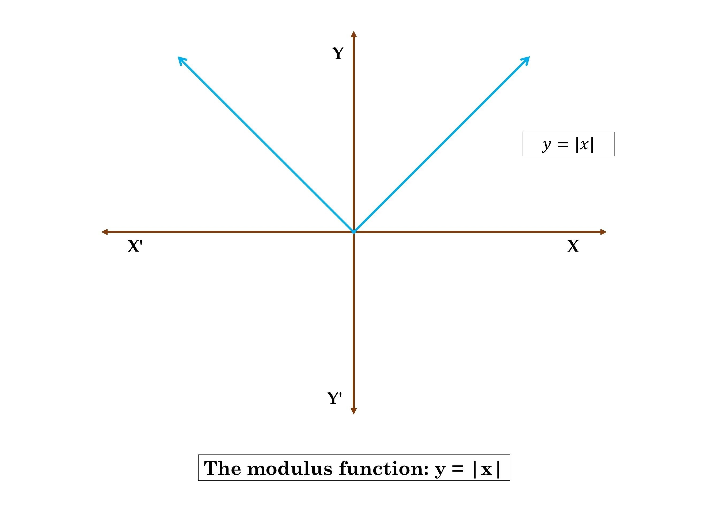

สรุปเนื้อหา: ฟังก์ชัน (Function)
สมาชิกของ ($\in$): คืออะไร?
สัญลักษณ์ $\in$ (Element of) ใช้อธิบายว่า "สิ่งนั้นเป็นหนึ่งในสมาชิกของกลุ่ม" หรือ "อยู่ในก๊วนเดียวกัน"
เปรียบเทียบง่ายๆ:
ถ้าห้องเรียนคือ "เซต"
นักเรียนแต่ละคน ก็คือ "สมาชิก" ($\in$) ของห้องนั้น!
ถ้าห้องเรียนคือ "เซต"
นักเรียนแต่ละคน ก็คือ "สมาชิก" ($\in$) ของห้องนั้น!

ภาพประกอบ: ใครอยู่ในกลุ่มบ้าง?
1. นิยามของฟังก์ชัน
ฟังก์ชัน \( f \) คือความสัมพันธ์ที่สำหรับสมาชิก \( x \in D_r \) ทุกตัว จะจับคู่กับสมาชิก \( y \in R_r \) เพียงตัวเดียวเท่านั้น
\( f = \{ (x, y) \in A \times B \mid x \text{ จับคู่กับ } y \text{ เพียงตัวเดียว} \} \)
2. โดเมนและเรนจ์ (Domain & Range)
การหาโดเมนและเรนจ์มักติดเงื่อนไขของเครื่องหมายทางคณิตศาสตร์ เช่น:
- กรณีติดรูท (Radicals): \( y = \sqrt{f(x)} \) ต้องมีเงื่อนไข \( f(x) \geq 0 \)
- กรณีตัวส่วน (Fraction): \( y = \frac{1}{g(x)} \) ต้องมีเงื่อนไข \( g(x) \neq 0 \)
3. ฟังก์ชันประกอบ (Composite Function)
คือการนำผลลัพธ์ของฟังก์ชันหนึ่งไปเป็นค่า Input ของอีกฟังก์ชันหนึ่ง:
\( (f \circ g)(x) = f(g(x)) \)
4. ฟังก์ชันผกผัน (Inverse Function)
ถ้า \( f \) เป็นฟังก์ชัน 1-1 แล้วอินเวอร์สของ \( f \) หาได้จากการสลับที่ \( x \) และ \( y \):
หาก \( y = f(x) \) จะได้ \( x = f^{-1}(y) \)
ทริค: การหา \( f^{-1}(x) \) ให้สลับตัวแปร \( x \) กับ \( y \) ในสมการเดิม แล้วจัดรูปสมการใหม่ให้เป็น \( y = ... \)
กฎเหล็กเรื่องฟังก์ชัน (Function Rules)
ในการเรียนเรื่องฟังก์ชัน สิ่งที่น้องห้ามพลาดคือการจำกฎเหล่านี้ให้แม่น:
- กฎการเป็นฟังก์ชัน: สมาชิกตัวหน้า (โดเมน) 1 ตัว จะจับคู่กับสมาชิกตัวหลัง (เรนจ์) ได้เพียงค่าเดียวเท่านั้น
- กฎการหาโดเมน/เรนจ์: ระวังตัวส่วนห้ามเป็นศูนย์ และค่าในรากคู่ต้องไม่ติดลบเด็ดขาด
- กฎฟังก์ชัน 1-1: สมาชิกในเรนจ์ห้าม "แย่งกัน" มีสมาชิกในโดเมนมาจับคู่ (ต้องจับคู่แบบ 1 ต่อ 1 เท่านั้น)
- กฎฟังก์ชันประกอบ: ให้เริ่มทำจาก ข้างในออกข้างนอก เสมอ คือทำ \( g(x) \) ก่อน แล้วค่อยนำผลลัพธ์มาใส่ใน \( f \)

ภาพประกอบ: สรุปกฎของฟังก์ชัน